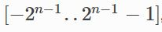
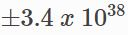

量化是指减少表示一个数字时所用的位数，在研究或部署深度学习算法时主要的表示形式为32位的浮点数表示(FP32)。为了减少带宽与计算量，学界尝试使用更低的精度表示。并且已经证实在没有造成精度显著下降的条件下，权重及激活值可以使用8位整型表示INT8。当然，用更少的位数表示如4/2/1-bits表示，也在积极探索中。
练一下插入数学公式，文章底部引用
动机：overall efficiency
进行量化的显著优势是，能明显降低带宽与所用存储。如用INT8来表示权重与激活值相较与FP32表示能减少4倍带宽利用。此外，整形运算比浮点计算更快，存储空间及耗能更少。
| INT8 Operation | Energy Saving vs FP32 | Area Saving vs FP32 |
|---|---|---|
| Add | 30x | 116x |
| Multiply | 18.5x | 27x |
若用更少的位数量化，如二进制(-1,1)或三进制(-1,0,1).则卷积层与全连接层只需加减操作，完全不需要乘法。若激活值也用二进制表示，那加法也不需要了，只需要进行位操作Rastegari et al., 2016
Integer vs. FP32
数字格式主要有两个属性，1. 动态范围，指可表示的数的范围。2. 在动态范围内能够表示多少数值，决定了精度/分辨率。
对于整形格式它的动态范围是, n是位数，如INT8的范围是[-128, 127].对于FP32它的动态范围大约是.可以看出FP32能够表示更多的值，这对于深度学习模型来说很好。位了解决动态范围窄的问题，通常会加入scale factor将模型中向量的动态范围映射到整形范围中。但精度低的问题依然没有解决。
需要指出，大多数情况下scale factor是一个浮点数，即使使用整数表示，也避免不了浮点运算。
避免溢出
卷积及全连接层中包括在加法器存储中间值，限于整形格式有限的动态范围，对于加法器如果使用和权重及激活值相同的位宽，很肯能会溢出很快，因此，加法器通常使用更高的位宽。
INT8量化
大多数情况，可以对一个FP32的模型直接进行INT8量化，在没有re-training的情况下，可得到精度损失很小的结果，若进行fine-tunning可进一步提高精度。